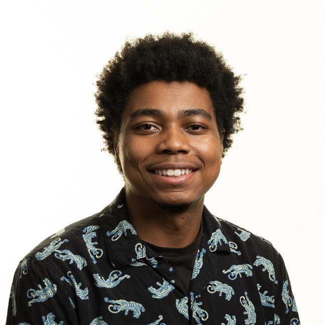

Home

Welcome to my personal website and development log!
I'm ecstatic to have you here. As you navigate through this site, I hope you'll discover my passion for software development or maybe give you some inspiration to create something new of your own.
You'll also get a chance to know a little more about me if you're curious and came from my LinkedIn.
I'm ecstatic to have you here. As you navigate through this site, I hope you'll discover my passion for software development or maybe give you some inspiration to create something new of your own.
You'll also get a chance to know a little more about me if you're curious and came from my LinkedIn.
What else should you expect to see?
Everything here is to acknowledge and document some of my personal feats as a developer. The Projects page will only continue to grow every month to reflect whatever topic I may be focused on at the moment.
Everything here is to acknowledge and document some of my personal feats as a developer. The Projects page will only continue to grow every month to reflect whatever topic I may be focused on at the moment.
Allow me to introduce myself!
I'm currently an amateur software developer and recent graduate of Sacramento State (Stingers up!).
In terms of software development, my areas of expertise are full stack development, cloud computing, and machine learning. The projects page is intended to highlight the skills I have used on my projects.
I'm currently an amateur software developer and recent graduate of Sacramento State (Stingers up!).
In terms of software development, my areas of expertise are full stack development, cloud computing, and machine learning. The projects page is intended to highlight the skills I have used on my projects.
Beyond my hard work behind the desk, I find solace and excitement
in a few hobbies that I keep up with. I could be soaring through
the streets on my skateboard, exploring the serene waters of the Folsom
lake while kayaking, or having a light gaming session.